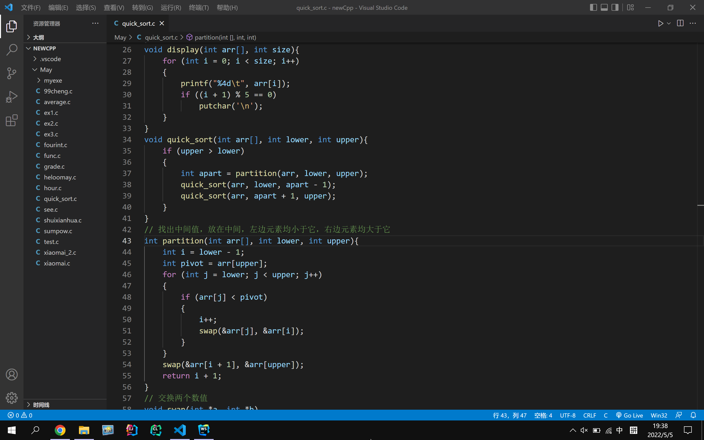

班级通知群、学院通知群众多，但是重要登记表、重要的通知文件发送的位置都不同，所以建议凡是和自己有关的相关文件，建议备份到云空间或打印纸质保存。
2️⃣好好利用图书馆
图书馆，顾名思义，收纳了很多的图书。不仅文学类作品多，专业类书籍也很多。如果自己选好一本书准备来参阅，先不着急买，首先建议图书馆查找，免费白嫖不亦乐乎。极大改善大学生资金紧张的局面，如果实在是没有，还是老老实实购买原书。
3️⃣多了解现代化工具
在我的学习页面末尾介绍了三个现代化开发工具，其中第一个Vscode适用性广、可用于多语言开发；第二个是大名鼎鼎的IDEA，最受欢迎的Java开发IDE；第三个是现代化的跨平台C/C++ IDE。推荐大家了解一下，打开它就可以感受到现代化的气息，而不是到一股古董的气息。
1.万能草稿纸/记事本：Visual Studio Code.微软打造的轻量级代码编辑器，启动快，占用资源少，免费开源，支持多种主流高级语言，最吸引人的是强大的社区支持和拓展性，正因为如此，目前为止几乎每个程序员的计算机上都有它。(Linux用户可能更偏爱Vim)只要花心思探索，vscode就能在自己手中变的无比强大！对于我来说，它更像我的草稿本，平时上课跟着敲一敲C程序啊、写一写网页代码就非常的便捷。至于其他更多的功能我还没有深入探索。  2.智能的Java开发工具——Intellij IDEA.著名的IDE厂商，来自捷克的Jetbrains公司的成名之作。我仅仅短短使用了几次，就足以看出它的无限潜力，IDEA是功能十分强大的Java集成开发工具，我感受到最好用的功能是快捷键、极为智能的代码补全和自动导包。玩起来非常有意思的哈。为了方便大家上手，它在內部集成了使用方法，跟着教程使用，也是一件非常有趣的事情。IDEA也提供了多种版本：Edu/Community/Ultimate.教育版和社区版是免费的，在学习阶段使用到的功能也是一应俱全的，缺少的是一些高级框架的支持和高级分析器之类的。终极版是需要付费的，149$一年(太贵啦)。但大家别忘了自己是大学生！我们社会对大学生是非常友好的，所以不要浪费自己的大学生身份哦！Jetbrains公司为高校学生/教师提供了专属许可证(👍点赞)，只需要简单的进行验证就好了！🔗详情 。下面来看看我的许可证(仅可用于学习)：
所以说，软件并不是免费的，如果能通过正当渠道获得使用权，咱们就走正道，尽量不使用使用“邪门歪道”获得使用权/破解软件，首先是正当途径获得的软件会得到官方的维护，这就使得软件的运行速度、对计算机资源的调度会更智能(比如内存占用、CPU占用、耗电情况)；其次使用“邪门歪道”做会寒了软件开发者的心，开发者没有银子了，所以软件后期运维得不到保障💔.
我的内心独白：
如果当初微软严格要求Windows收费的话，我想大家现在都在用基于Linux的国产操作系统吧，我觉得这样国内计算机发展可能会后很大改观吧！
“Windows害了一代人”——李老师
IDEA界面：

IDE最好用的地方莫过于快捷键、语法高亮、智能代码补全等等功能，使用非常炫酷的现代化开发工具是可以增加自己的学习兴趣，推荐的几个软件，也是给大家提供了几个选择，如果觉得自己目前用的编辑器或IDE不顺手，可以尝试一下我推荐的这几款。望大家都能找到最适合自己的开发工具！
4️⃣找到优质学习网站
1.B站，可以看很多课程的视频，也可以拿来放松看鬼畜视频。
2.GitHub，在这里可以看到世界上最牛的程序员写的代码，同时也可以帮你进行源代码管理。
3.刷题网站，力扣、洛谷等 ……